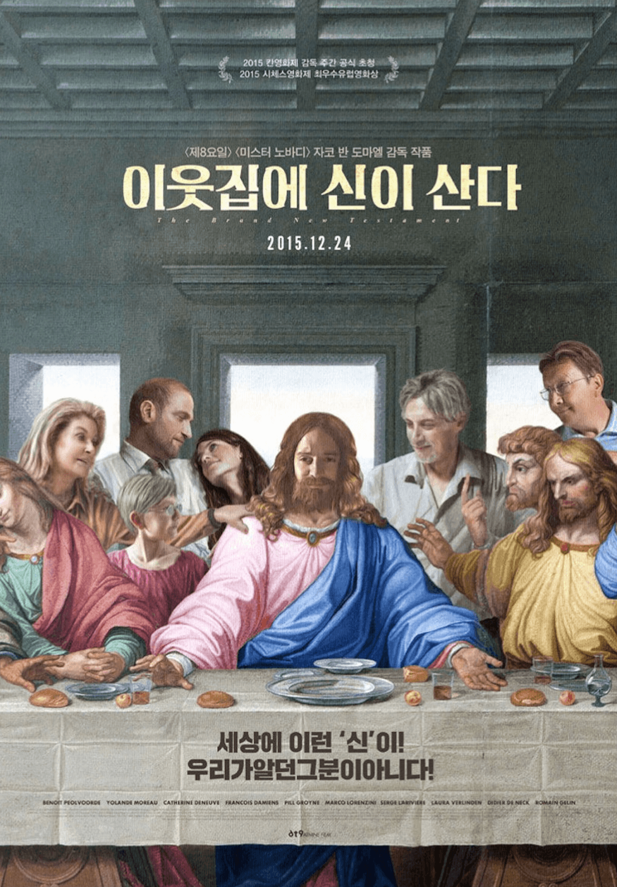
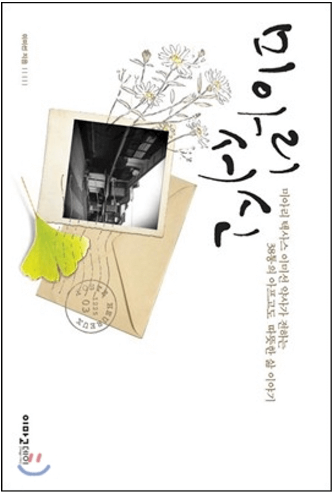
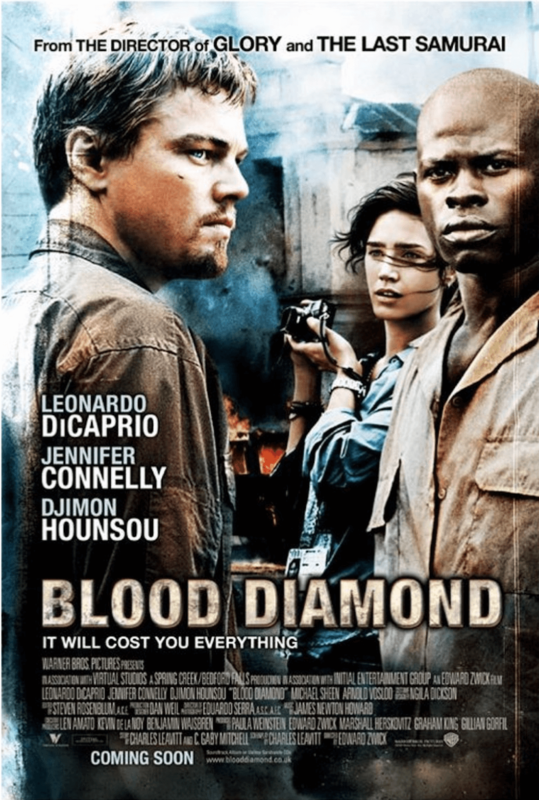
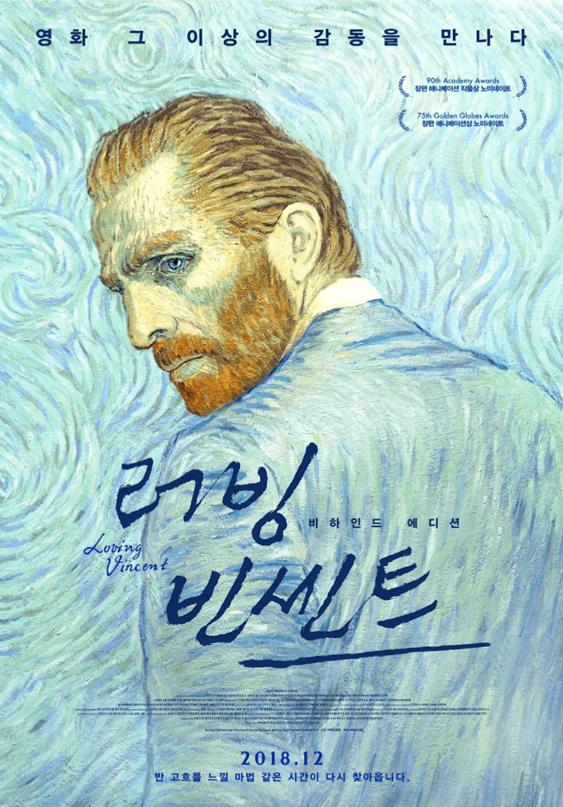

<학인위 사랑방>은 인권 관련 컨텐츠 추천글입니다.
한 달에 한 번, 우리 주변과 나의 삶을 생각해 볼 수 있는
다양한 컨텐츠를 감상해 보시는 건 어떨까요?
<학인위 사랑방> 9월호에 올라온 컨텐츠를 감상한 후
#학인위사랑방 해시태그와 함께 인스타그램에 감상평을 올리면,
추첨을 통해 매달 세 분께 문화상품권(만원)을 드립니다.
“
죽으면 아무것도 없어요.
여기가 천국이에요.
”
장르 영화, 코미디/판타지
감독 벤자코 반도르말
개봉 2015
부인에게, 딸에게 매사 폭력적인 에아의 아빠. 지나치게 인간적인 이 인물은 바로 이 세상을 만들고 조종하는 신! 에아는 사람을 괴롭히는 것이 낙인 꼬장꼬장한 아빠 신을 견디다 못해 탈출을 감행합니다. 신이 고작 저런 거라면, 차라리 성서 따위 내가 다시 쓰고 만다. 세탁기를 타고 지상으로 탈출한 에아는 여섯 명의 사도를 모으러 다닙니다. 사도라면, 당연히 신앙심이 깊고, 남에게 베풀고, 투철한 삶을 사는 사람들이겠죠? 재치 있는 대사와 뛰어난 영상미가 돋보이며 생각할 거리를 던져줍니다. 다양한 삶을 응원하고 지금 순간의 소중함을 알려주는 영화입니다.
“
그녀들이 밝은 세상을 향하여
한 발 한 발 어렵게 떼어놓을 때,
그 손을 잡아주고 싶습니다.
”
장르 책, 칼럼/종교
저자 이미선
출간 2012
여러분은 “성노동” 하면 어떤 생각이 드나요? 그리고 “성노동자”는 어떻게 생각하시나요? 대부분의 편견은 무지로부터 출발합니다. 성노동 집결지인 “미아리 텍사스”에서 “건강한 약국”을 운영중인 이미선 약사의 칼럼을 통해, 성노동 문제 그 자체가 아닌 성노동자들의 삶을 들여다볼 수 있습니다. 이미선 약사는 텍사스촌의 사람들과 함께 아파하고 그들을 위해서 간절히 기도합니다. “약사 이모” 이미선 약사가 아프고도 따뜻한 그 곳 사람들의 이야기를 이 책을 통해 들려드립니다.
“
당신도 공범이야.
미국인은 다 공범이야.
”
장르 영화, 모험/전쟁
감독 에드워드 즈윅
개봉 2017
이제 많은 사람들이 다이아몬드를 둘러싼 이권 분쟁을 알고 있습니다. 하지만, 그럼에도 불구하고 다이아몬드를 선망하고 로맨틱하게 여기는 분위기는 마찬가지이죠. 다이아몬드 생산지를 쟁탈하기 위해 수백 명의 사람들이 목숨을 잃습니다. 그러나 실제로 다이아몬드 생산지를 차지하는 사람은 목숨을 잃은 사람들이지도 않습니다. 분쟁 다이아몬드(Blood Diamond)라는 사회 문제 그 자체를 제목으로 하고 있는 이 영화는 아름다움에 현혹되지 말 것을, 그를 둘러싼 현실에 주목할 것을 당부합니다.
“
The sight of the stars always makes me dream.
”
장르 애니메이션, 미스터리
감독 도로타 코비엘라, 휴 웰치맨
개봉 2017
여러분이 알고 있는 빈센트 반 고흐의 그림은 무엇인가요? 죽어서야 비로소 가치를 인정받은 그의 그림들을 보기 이전에, 빈센트 반 고희의 삶을 살펴보면 좋겠지요. 살아생전 그는 매일을 어떠한 생각으로 살았을까요? 살아생전 그는 매일을 어떠한 마음으로 견뎌냈을까요? 반 고흐의 삶을 정확히 알 수는 없지만, 그가 남긴 글과 그림을 통해 그를 들여다보고자 합니다. 그를 사랑하는 107명의 아티스트가 모여 반 고희의 삶과 죽음에 대한 새로운 이야기를 전합니다. 반 고흐를 사랑하는 사람이라면, 그리고 삶의 의미를 고민해보고 싶은 분이라면 영화를 보고 많은 생각을 할 수 있을 것입니다.
추천해드린 컨텐츠 중 여러분이 보고 싶은 컨텐츠는 무엇인가요?
<학인위 사랑방>에 올라온 컨텐츠를 감상한 후
#학인위사랑방 해시태그와 함께 인스타그램에 감상평을 올리면,
추첨을 통해 매달 세 분께 상품을 드립니다.
다른 사람에게 추천하고 싶은 인권 관련 컨텐츠가 있다면,
학생인권위원회 @seoultech.humanrights 댓글과 DM으로 알려주세요.
다음 달 <학인위 사랑방>에 반영하겠습니다!